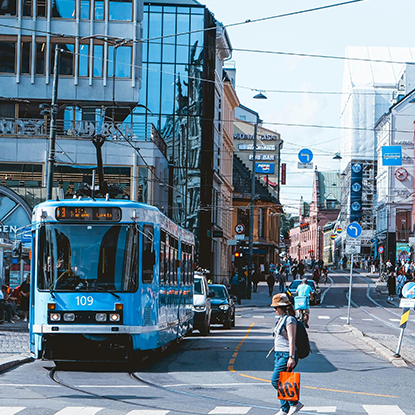
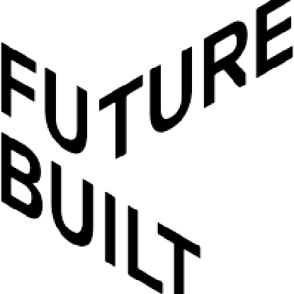
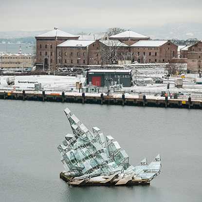
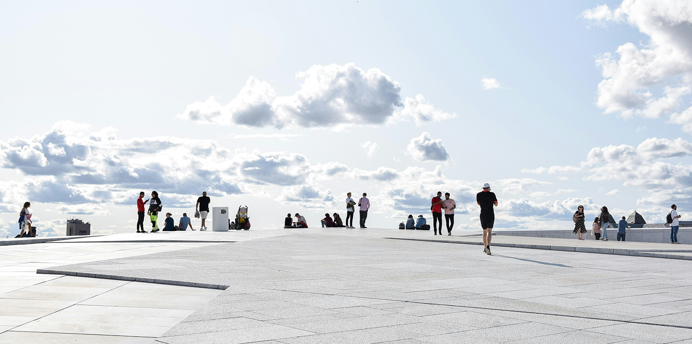

Oslo
The Second Smartest City in the World

What makes Oslo smart?

Oslo aims to reduce the carbon foot by developing zero-emission public transport, such as electric buses and trains.
In addition to giving special advantages to zero-emission car driver.

The FutureBuilt program. Founded to support climate friendly urban development, and to show that climate neutral urban areas,
based on high quality architecture, are possible.

SmartOslo Accelerator, which works as an interface between local councilors and the private sector.
SmartOslo Accelerator invites a broad range of technologies capable of solving smart city challenges.
Oslo Innovation week.
Giving innovators a platform where they can share their innovations to the world
Giving innovators a platform where they can share their innovations to the world

